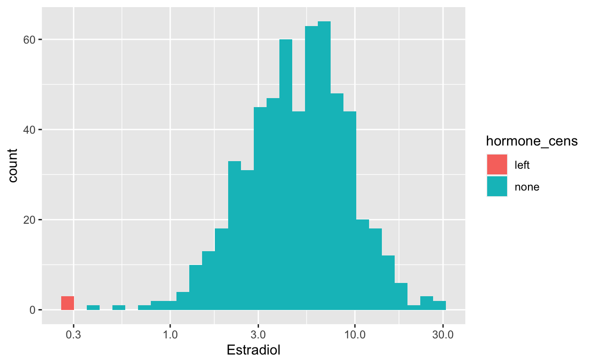
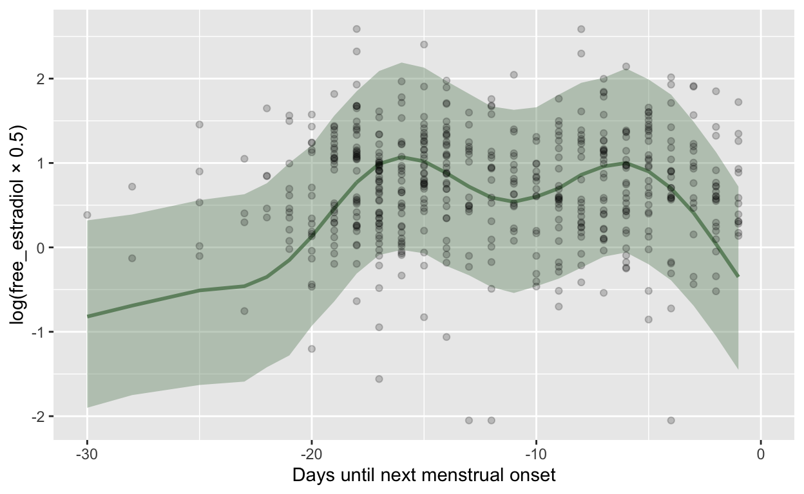
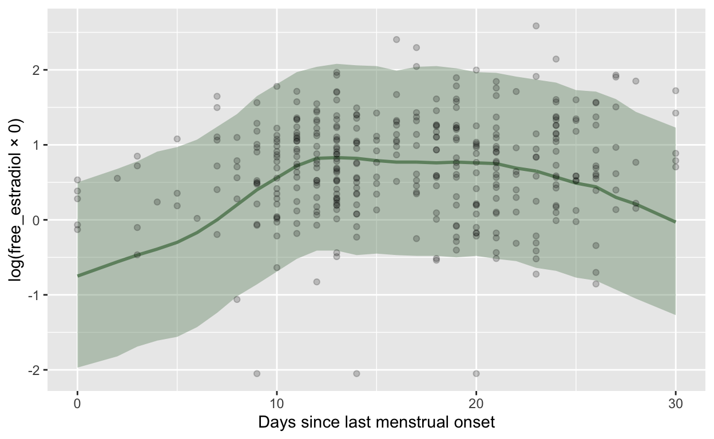
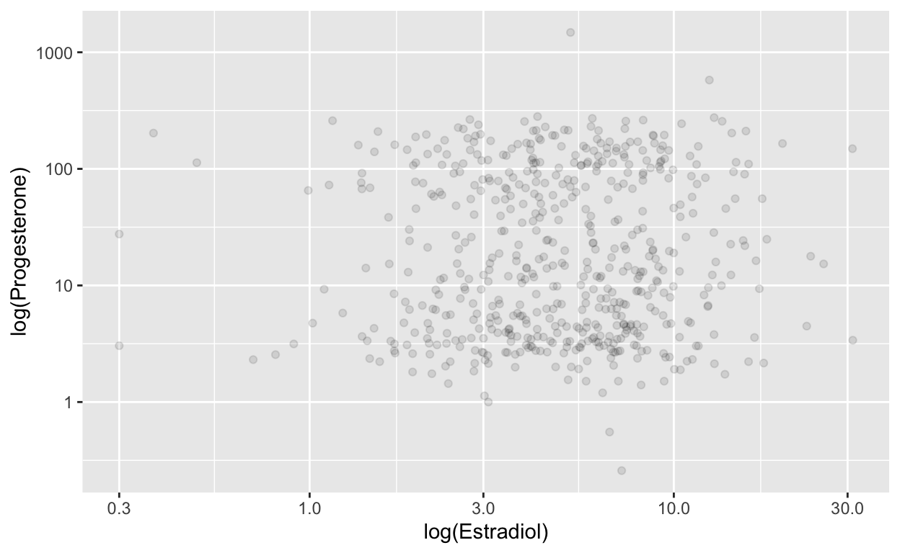

load("../gocd2/data/cleaned.rdata")
gocd2 <- diary %>% drop_na(`VPN-Zahl`)
lab_raw = readxl::read_xlsx("../gocd2/data/Datensatz_Zyklusstudie_Labor.xlsx") %>% drop_na(`VPN-Zahl`)
length(intersect(gocd2$`VPN-Zahl`, lab_raw$`VPN-Zahl`))
[1] 134[1] 0[1] 23lab_only <- lab_raw %>%
# anti_join(gocd2, by= c("VPN-Zahl" = "VPN-Zahl")) %>%
mutate(
`Date LH surge` = as.Date(if_else(`Date LH surge` == "xxx", NA_real_, as.numeric(`Date LH surge`)), origin = "1899-12-30")
) %>%
select(id = `VPN-Zahl`,
estradiol = `IBL_Estradiol pg/ml`,
progesterone = `Progesterone pg/ml`,
estradiol_lcms = `Estradiol pg/ml`,
date = `Datum Lab Session`,
date_lh = `Date LH surge`,
date_mens = `Menstrual Onset`) %>%
mutate(bc_day = as.numeric(as.Date(date) - as.Date(date_mens)),
bc_day = if_else(bc_day > -1, NA_real_, bc_day)) %>%
group_by(id) %>%
arrange(date_mens) %>%
mutate(cycle = as.numeric(factor(date_mens))) %>%
group_by(id, cycle) %>%
mutate(date_lh = first(na.omit(date_lh)),
lh_day = as.numeric(as.Date(date) - date_lh)
) %>%
ungroup() %>%
arrange(id, cycle, date)
Warning in replace_with(out, !condition, false, fmt_args(~false),
glue("length of {fmt_args(~condition)}")): NAs introduced by coercionqplot(lab_only$lh_day) + xlim(-30, NA)
`stat_bin()` using `bins = 30`. Pick better value with `binwidth`.Warning: Removed 138 rows containing non-finite values (stat_bin).Warning: Removed 1 rows containing missing values (geom_bar).lab_only %>% summarise(n(), n_distinct(id))
# A tibble: 1 × 2
`n()` `n_distinct(id)`
<int> <int>
1 628 157gocd2 %>% summarise(n(), n_distinct(session))
n() n_distinct(session)
1 445 134gocd2 <- gocd2 %>% select(id = `VPN-Zahl`,
date = created_date,
bc_day = menstrual_onset_days_until,
fc_day = menstrual_onset_days_since,
cycle_length) %>%
as_tibble()
gocd2 <- lab_only %>% left_join(gocd2, by = c("id", "date"), suffix = c("", "_diary"))
relstatage <- lab_raw %>% mutate(partner = if_else(Relationship_status == 1, 0, 1)) %>% select(id = `VPN-Zahl`, age = Age, partner) %>% distinct(id, .keep_all = TRUE)
gocd2 <- gocd2 %>% left_join(relstatage, by = c("id"))
gocd2 <- gocd2 %>%
# when we have a BC day from the online diary, we prefer it
mutate(bc_day = coalesce(bc_day_diary, bc_day)) %>%
select(-bc_day_diary)
range(gocd2$fc_day, na.rm = T)
[1] 0 87
FALSE TRUE
185 443 range(gocd2$bc_day, na.rm = T)
[1] -41 -1
FALSE TRUE
4 624 range(gocd2$lh_day, na.rm = T)
[1] -20 16
FALSE TRUE
138 490 gocd2 <- gocd2 %>%
mutate(bc_day = if_else(is.na(cycle_length) & bc_day < -35, NA_real_, bc_day))
gocd2_u <- gocd2 %>% filter(is.na(cycle_length) | between(cycle_length, 25, 35))
range(gocd2_u$fc_day, na.rm = T)
[1] 0 34
FALSE TRUE
185 358 range(gocd2_u$bc_day, na.rm = T)
[1] -34 -1
FALSE TRUE
6 537 range(gocd2_u$lh_day, na.rm = T)
[1] -20 16
FALSE TRUE
118 425 qplot(gocd2_u$lh_day)
`stat_bin()` using `bins = 30`. Pick better value with `binwidth`.Warning: Removed 118 rows containing non-finite values (stat_bin).
FALSE TRUE
581 47 min(gocd2$estradiol_lcms,na.rm=T)
[1] 2.13qplot(gocd2$estradiol_lcms,na.rm=T) + scale_x_log10()
`stat_bin()` using `bins = 30`. Pick better value with `binwidth`.cor.test(gocd2$estradiol_lcms, gocd2$estradiol)
Pearson's product-moment correlation
data: gocd2$estradiol_lcms and gocd2$estradiol
t = 0.70509, df = 129, p-value = 0.482
alternative hypothesis: true correlation is not equal to 0
95 percent confidence interval:
-0.1107421 0.2310304
sample estimates:
cor
0.06196029 gocd2 <- gocd2 %>%
mutate(
estradiol_cens = if_else(estradiol <= 2.1, "left", "none"),
estradiol = if_else(estradiol_cens == "left", 2.1, estradiol),
estradiol_lcms = if_else(!is.na(estradiol_lcms) | is.na(estradiol), estradiol_lcms, 1),
estradiol_lcms_cens = if_else(estradiol_lcms <= 1, "left", "none")
) %>%
mutate(
progesterone_cens = if_else(progesterone <= 0, "left", "none"),
progesterone = if_else(progesterone_cens == "left", 0, progesterone)
)
cor.test(gocd2$estradiol_lcms, gocd2$estradiol)
Pearson's product-moment correlation
data: gocd2$estradiol_lcms and gocd2$estradiol
t = 1.3156, df = 594, p-value = 0.1888
alternative hypothesis: true correlation is not equal to 0
95 percent confidence interval:
-0.02652644 0.13363534
sample estimates:
cor
0.05390112 table(gocd2$estradiol_lcms_cens)
left none
465 139 is.na(estradiol)
is.na(progesterone) FALSE TRUE
FALSE 552 29
TRUE 44 3 is.na(estradiol)
estradiol_cens FALSE
left 56
none 540n_distinct(gocd2$id)
[1] 157qplot(data = gocd2, estradiol, fill = estradiol_cens)
`stat_bin()` using `bins = 30`. Pick better value with `binwidth`.Warning: Removed 32 rows containing non-finite values (stat_bin).saveRDS(gocd2, "gocd2.rds")
gocd2 %>% select(estradiol, estradiol_lcms) %>% summarise_all(funs(mean = mean(., na.rm=T), sd = sd(., na.rm=T), logmean = mean(log(.), na.rm=T), logsd = sd(log(.), na.rm=T))) %>% knitr::kable()
Warning: `funs()` was deprecated in dplyr 0.8.0.
Please use a list of either functions or lambdas:
# Simple named list:
list(mean = mean, median = median)
# Auto named with `tibble::lst()`:
tibble::lst(mean, median)
# Using lambdas
list(~ mean(., trim = .2), ~ median(., na.rm = TRUE))| estradiol_mean | estradiol_lcms_mean | estradiol_sd | estradiol_lcms_sd | estradiol_logmean | estradiol_lcms_logmean | estradiol_logsd | estradiol_lcms_logsd |
|---|---|---|---|---|---|---|---|
| 5.938674 | 4.096589 | 3.863755 | 15.39471 | 1.609666 | 0.4829841 | 0.5768767 | 0.9771497 |
ggplot(gocd2, aes(estradiol, estradiol_lcms)) + geom_point() + geom_abline(slope = 1, intercept = 0) + coord_equal(xlim = c(0,45), ylim = c(0,45))
Warning: Removed 32 rows containing missing values (geom_point).cor.test(gocd2$estradiol, gocd2$estradiol_lcms)
Pearson's product-moment correlation
data: gocd2$estradiol and gocd2$estradiol_lcms
t = 1.3156, df = 594, p-value = 0.1888
alternative hypothesis: true correlation is not equal to 0
95 percent confidence interval:
-0.02652644 0.13363534
sample estimates:
cor
0.05390112
Pearson's product-moment correlation
data: log(gocd2$estradiol) and log(gocd2$estradiol_lcms)
t = 1.7993, df = 594, p-value = 0.07248
alternative hypothesis: true correlation is not equal to 0
95 percent confidence interval:
-0.006726411 0.153033910
sample estimates:
cor
0.07362609 ggplot(gocd2, aes(estradiol, estradiol_lcms)) + scale_x_log10() + scale_y_log10() + geom_point()
Warning: Removed 32 rows containing missing values (geom_point).source("0_summary_functions.R")
Loading required package: RcppLoading 'brms' package (version 2.16.2). Useful instructions
can be found by typing help('brms'). A more detailed introduction
to the package is available through vignette('brms_overview').
Attaching package: 'brms'The following object is masked from 'package:stats':
ardf <- gocd2 %>% select(id, cycle, bc_day, fc_day, lh_day, hormone = progesterone, hormone_cens = progesterone_cens, cycle_length, age, partner)
summarise_hormone(df = df, Dataset = "GOCD2", Hormone = "Progesterone", Method = "Salivary liquid chromatography–mass spectrometry",
Citation = "Jünger, J., Kordsmeyer, T. L., Gerlach, T. M., & Penke, L. (2018). Fertile women evaluate male bodies as more attractive, regardless of masculinity. Evolution and Human Behavior: Official Journal of the Human Behavior and Evolution Society, 39(4), 412–423. https://doi.org/10.1016/j.evolhumbehav.2018.03.007",
LOQ = 5,
CV_intra = 10.8,
CV_inter = 9.7,
Procedure = "Next, the saliva samples were collected via passive drool. For hormone assays, we collected four saliva samples from each participant (one per testing session). Contamination of saliva samples was minimized by asking participants to abstain from eating, drinking (except plain water), smoking, chewing gum or brushing teeth for at least one hour before each session. The samples were stored at -80°C directly after collection until shipment on dry ice to the Kirschbaum Lab at Technical University of Dresden, Germany, where estradiol, progesterone, testosterone and cortisol was assessed via liquid chromatography mass spectrometry (LCMS; Gao, Stalder, & Kirschbaum, 2015). Since the LCMS analysis of the estradiol levels did only detect 22% of all possible values, the samples were reanalyzed using the highly sensitive 17β-estradiol enzyme immunoassay kit (IBL International, Hamburg, Germany). These latter estradiol values were used in subsequent analyses. ",
Scheduling = "Peri-ovulatory & Luteal 'Sessions two to five, the computer-based testing sessions, took place across two ovulatory cycles per participant, once per cycle during the fertile and once during the luteal phase. To control for possible effects of diurnal changes in hormone levels (Bao et al., 2003; Veldhuis et al., 1988), all sessions took place in the second half of the day (mainly between 11.30 am and 6 pm).'",
LH_test = "highly sensitive (10 mIU/ml) urine ovulation test strips from purbay®, which measure the luteinizing hormone (LH). These LH-tests had to be done at home at the estimated day of ovulation and the four days prior to that and results were self- reported by the participants.")
`summarise()` has grouped output by 'id'. You can override using the `.groups` argument.Joining, by = "bc_day"`summarise()` has grouped output by 'id'. You can override using the `.groups` argument.Warning: Results may not be meaningful for censored models.Automatically saving the model object in 'models/m_GOCD2_Progesterone_icc_id.rds'Warning: Results may not be meaningful for censored models.
Warning: Results may not be meaningful for censored models.
Warning: Results may not be meaningful for censored models.Warning: Rows containing NAs were excluded from the model.
Warning: Rows containing NAs were excluded from the model.Warning: Results may not be meaningful for censored models.
Warning: Results may not be meaningful for censored models.
Warning: Results may not be meaningful for censored models.$Dataset
[1] "GOCD2"
$Citation
[1] "Jünger, J., Kordsmeyer, T. L., Gerlach, T. M., & Penke, L. (2018). Fertile women evaluate male bodies as more attractive, regardless of masculinity. Evolution and Human Behavior: Official Journal of the Human Behavior and Evolution Society, 39(4), 412–423. https://doi.org/10.1016/j.evolhumbehav.2018.03.007"
$Hormone
[1] "Progesterone"
$Method
[1] "Salivary liquid chromatography–mass spectrometry"
$`Limit of detection`
[1] NA
$LOQ
[1] 5
$`Intraassay CV`
[1] 10.8
$`Interassay CV`
[1] 9.7
$Procedure
[1] "Next, the saliva samples were collected via passive drool. For hormone assays, we collected four saliva samples from each participant (one per testing session). Contamination of saliva samples was minimized by asking participants to abstain from eating, drinking (except plain water), smoking, chewing gum or brushing teeth for at least one hour before each session. The samples were stored at -80°C directly after collection until shipment on dry ice to the Kirschbaum Lab at Technical University of Dresden, Germany, where estradiol, progesterone, testosterone and cortisol was assessed via liquid chromatography mass spectrometry (LCMS; Gao, Stalder, & Kirschbaum, 2015). Since the LCMS analysis of the estradiol levels did only detect 22% of all possible values, the samples were reanalyzed using the highly sensitive 17β-estradiol enzyme immunoassay kit (IBL International, Hamburg, Germany). These latter estradiol values were used in subsequent analyses. "
$Scheduling
[1] "Peri-ovulatory & Luteal 'Sessions two to five, the computer-based testing sessions, took place across two ovulatory cycles per participant, once per cycle during the fertile and once during the luteal phase. To control for possible effects of diurnal changes in hormone levels (Bao et al., 2003; Veldhuis et al., 1988), all sessions took place in the second half of the day (mainly between 11.30 am and 6 pm).'"
$LH_test
[1] "highly sensitive (10 mIU/ml) urine ovulation test strips from purbay®, which measure the luteinizing hormone (LH). These LH-tests had to be done at home at the estimated day of ovulation and the four days prior to that and results were self- reported by the participants."
$distribution`stat_bin()` using `bins = 30`. Pick better value with `binwidth`.Warning: Removed 47 rows containing non-finite values (stat_bin).
$mean
[1] 53.71826
$logmean
[1] 2.874682
$logsd
[1] 1.588518
$median
[1] 13.5
$sd
[1] 91.17017
$mad
[1] 16.11586
$range
[1] "0.26, 1480.00"
$missing
[1] 47
$outliers
[1] 0
$censored
[1] 0
$n_women
[1] 157
$n_cycles
[1] 398
$n_days
[1] 628
$age
[1] "23.2±3.45"
$in_relationship
[1] "48%"
$cycle_length
[1] "29.5±6.54"
$usable_n
[1] 537
$usable_n_women
[1] 156
$no_lh_surge_woman
[1] "10/124 (8%)"
$no_lh_surge_cycle
[1] "59/240 (25%)"
$var_id_loo
[1] "-0.01 [-0.01;-0.00]"
$var_cycle_loo
[1] "-0.01 [-0.02;-0.01]"
$var_id
[1] "0.11 [0.00;0.28] (1%)"
$var_cycle
[1] "0.09 [0.00;0.25] (0%)"
$var_resid
[1] "1.59 [1.50;1.69] (99%)"
$bc_day_model
Family: gaussian
Links: mu = identity; sigma = identity
Formula: log(hormone) | cens(hormone_cens) ~ s(bc_day) + (1 | id) + (1 | id:cycle)
Data: df (Number of observations: 532)
Draws: 4 chains, each with iter = 1000; warmup = 0; thin = 1;
total post-warmup draws = 4000
Smooth Terms:
Estimate Est.Error l-95% CI u-95% CI Rhat Bulk_ESS
sds(sbc_day_1) 4.95 1.52 2.92 8.61 1.00 1313
Tail_ESS
sds(sbc_day_1) 2114
Group-Level Effects:
~id (Number of levels: 156)
Estimate Est.Error l-95% CI u-95% CI Rhat Bulk_ESS
sd(Intercept) 0.50 0.07 0.36 0.63 1.00 1168
Tail_ESS
sd(Intercept) 1524
~id:cycle (Number of levels: 350)
Estimate Est.Error l-95% CI u-95% CI Rhat Bulk_ESS
sd(Intercept) 0.11 0.08 0.00 0.29 1.01 711
Tail_ESS
sd(Intercept) 1262
Population-Level Effects:
Estimate Est.Error l-95% CI u-95% CI Rhat Bulk_ESS Tail_ESS
Intercept 2.91 0.06 2.80 3.02 1.00 2453 2736
sbc_day_1 -5.34 4.78 -14.94 3.92 1.00 1842 2406
Family Specific Parameters:
Estimate Est.Error l-95% CI u-95% CI Rhat Bulk_ESS Tail_ESS
sigma 0.94 0.04 0.88 1.02 1.00 1925 2426
Draws were sampled using sample(hmc). For each parameter, Bulk_ESS
and Tail_ESS are effective sample size measures, and Rhat is the potential
scale reduction factor on split chains (at convergence, Rhat = 1).
$r_bc
[1] "0.75 [0.72;0.77]"
$rmse_bc
[1] "1.43 [1.34;1.51]"
$r_loo_bc
[1] "0.73 [0.68;0.77]"
$r_bc_stirn
[1] "-0.42 [-0.49;-0.35]"
$r_log_bc_stirn
[1] "-0.67 [-0.72;-0.62]"
$r_diff_bc_stirn
[1] "-0.46 [-0.52;-0.39]"
$r_log_diff_bc_stirn
[1] "-0.66 [-0.70;-0.61]"
$r_bc_imputed
[1] " 0.74 [ 0.69; 0.77]"
$r_diff_bc_imputed
[1] " 0.68 [ 0.63; 0.72]"
$sd_bc_imputed
[1] "1.23 (102%)"
$r_diff_bc_imputed_rr
[1] " 0.68 [ 0.63; 0.72]"
$imputed_bc_vs_measured_graphWarning: Removed 8 rows containing missing values (geom_smooth).Warning: Removed 8 rows containing missing values (geom_point).
$rmse_bc_imputed
[1] " 1.10"
$fc_day_model
Family: gaussian
Links: mu = identity; sigma = identity
Formula: log(hormone) | cens(hormone_cens) ~ s(fc_day) + (1 | id) + (1 | id:cycle)
Data: df (Number of observations: 368)
Draws: 4 chains, each with iter = 1000; warmup = 0; thin = 1;
total post-warmup draws = 4000
Smooth Terms:
Estimate Est.Error l-95% CI u-95% CI Rhat Bulk_ESS
sds(sfc_day_1) 3.72 1.21 2.05 6.72 1.00 2757
Tail_ESS
sds(sfc_day_1) 2863
Group-Level Effects:
~id (Number of levels: 124)
Estimate Est.Error l-95% CI u-95% CI Rhat Bulk_ESS
sd(Intercept) 0.41 0.11 0.16 0.60 1.00 713
Tail_ESS
sd(Intercept) 650
~id:cycle (Number of levels: 240)
Estimate Est.Error l-95% CI u-95% CI Rhat Bulk_ESS
sd(Intercept) 0.11 0.08 0.00 0.31 1.00 1400
Tail_ESS
sd(Intercept) 2039
Population-Level Effects:
Estimate Est.Error l-95% CI u-95% CI Rhat Bulk_ESS Tail_ESS
Intercept 2.81 0.07 2.68 2.94 1.00 5823 3393
sfc_day_1 -7.40 5.24 -18.52 2.41 1.00 3649 2776
Family Specific Parameters:
Estimate Est.Error l-95% CI u-95% CI Rhat Bulk_ESS Tail_ESS
sigma 1.02 0.05 0.93 1.12 1.00 1779 2218
Draws were sampled using sample(hmc). For each parameter, Bulk_ESS
and Tail_ESS are effective sample size measures, and Rhat is the potential
scale reduction factor on split chains (at convergence, Rhat = 1).
$r_fc
[1] "0.71 [0.68;0.74]"
$rmse_fc
[1] "1.50 [1.40;1.63]"
$r_loo_fc
[1] "0.70 [0.64;0.74]"
$r_fc_stirn
[1] "-0.54 [-0.61;-0.46]"
$r_log_fc_stirn
[1] "-0.65 [-0.71;-0.59]"
$r_diff_fc_stirn
[1] "-0.51 [-0.58;-0.43]"
$r_log_diff_fc_stirn
[1] "-0.60 [-0.67;-0.53]"
$r_fc_imputed
[1] " 0.64 [ 0.57; 0.69]"
$r_diff_fc_imputed
[1] " 0.57 [ 0.50; 0.64]"
$sd_fc_imputed
[1] "0.96 (74%)"
$r_diff_fc_imputed_rr
[1] " 0.63 [ 0.56; 0.69]"
$imputed_fc_vs_measured_graphWarning: Removed 170 rows containing missing values (geom_smooth).Warning: Removed 170 rows containing missing values (geom_point).
$rmse_fc_imputed
[1] " 1.32"
$lh_day_model
Family: gaussian
Links: mu = identity; sigma = identity
Formula: log(hormone) | cens(hormone_cens) ~ s(lh_day) + (1 | id) + (1 | id:cycle)
Data: df %>% filter(between(lh_day, -15, 15)) (Number of observations: 412)
Draws: 4 chains, each with iter = 1000; warmup = 0; thin = 1;
total post-warmup draws = 4000
Smooth Terms:
Estimate Est.Error l-95% CI u-95% CI Rhat Bulk_ESS
sds(slh_day_1) 2.35 0.95 1.00 4.74 1.00 1895
Tail_ESS
sds(slh_day_1) 2867
Group-Level Effects:
~id (Number of levels: 143)
Estimate Est.Error l-95% CI u-95% CI Rhat Bulk_ESS
sd(Intercept) 0.31 0.13 0.04 0.53 1.01 570
Tail_ESS
sd(Intercept) 749
~id:cycle (Number of levels: 247)
Estimate Est.Error l-95% CI u-95% CI Rhat Bulk_ESS
sd(Intercept) 0.12 0.09 0.00 0.33 1.00 1016
Tail_ESS
sd(Intercept) 1512
Population-Level Effects:
Estimate Est.Error l-95% CI u-95% CI Rhat Bulk_ESS Tail_ESS
Intercept 2.76 0.06 2.64 2.88 1.00 4094 3145
slh_day_1 -0.47 3.97 -8.65 6.92 1.00 2714 2448
Family Specific Parameters:
Estimate Est.Error l-95% CI u-95% CI Rhat Bulk_ESS Tail_ESS
sigma 1.08 0.05 0.99 1.17 1.00 1554 2540
Draws were sampled using sample(hmc). For each parameter, Bulk_ESS
and Tail_ESS are effective sample size measures, and Rhat is the potential
scale reduction factor on split chains (at convergence, Rhat = 1).
$r_lh
[1] "0.70 [0.67;0.73]"
$rmse_lh
[1] "1.57 [1.45;1.68]"
$r_loo_lh
[1] "0.69 [0.63;0.74]"
$r_prob_lh
[1] "-0.38 [-0.46;-0.29]"
$r_log_prob_lh
[1] "-0.60 [-0.66;-0.54]"
$r_diff_prob_lh
[1] "-0.44 [-0.51;-0.36]"
$r_log_diff_prob_lh
[1] "-0.63 [-0.69;-0.57]"
$r_lh_imputed
[1] " 0.62 [ 0.56; 0.68]"
$r_diff_lh_imputed
[1] " 0.64 [ 0.58; 0.70]"
$sd_lh_imputed
[1] "1.06 (68%)"
$r_diff_lh_imputed_rr
[1] " 0.71 [ 0.66; 0.76]"
$imputed_lh_vs_measured_graphWarning: Removed 125 rows containing missing values (geom_smooth).Warning: Removed 125 rows containing missing values (geom_point).
$rmse_lh_imputed
[1] " 1.28"df <- gocd2%>% select(id, cycle, bc_day, fc_day, lh_day, hormone = estradiol, hormone_cens = estradiol_cens, cycle_length, age, partner)
summarise_hormone(df = df, Dataset = "GOCD2",
Hormone = "Estradiol",
Method = "Salivary immunoassay (IBL)",
Citation = "Jünger, J., Kordsmeyer, T. L., Gerlach, T. M., & Penke, L. (2018). Fertile women evaluate male bodies as more attractive, regardless of masculinity. Evolution and Human Behavior: Official Journal of the Human Behavior and Evolution Society, 39(4), 412–423. https://doi.org/10.1016/j.evolhumbehav.2018.03.007",
LOD = 2.1,
LOQ = 2.1,
CV_intra = 8.8,
CV_inter = 11.3,
Procedure = "Next, the saliva samples were collected via passive drool. For hormone assays, we collected four saliva samples from each participant (one per testing session). Contamination of saliva samples was minimized by asking participants to abstain from eating, drinking (except plain water), smoking, chewing gum or brushing teeth for at least one hour before each session. The samples were stored at -80°C directly after collection until shipment on dry ice to the Kirschbaum Lab at Technical University of Dresden, Germany, where estradiol, progesterone, testosterone and cortisol was assessed via liquid chromatography mass spectrometry (LCMS; Gao, Stalder, & Kirschbaum, 2015). Since the LCMS analysis of the estradiol levels did only detect 22% of all possible values, the samples were reanalyzed using the highly sensitive 17β-estradiol enzyme immunoassay kit (IBL International, Hamburg, Germany). These latter estradiol values were used in subsequent analyses. ",
Scheduling = "Peri-ovulatory & Luteal 'Sessions two to five, the computer-based testing sessions, took place across two ovulatory cycles per participant, once per cycle during the fertile and once during the luteal phase. To control for possible effects of diurnal changes in hormone levels (Bao et al., 2003; Veldhuis et al., 1988), all sessions took place in the second half of the day (mainly between 11.30 am and 6 pm).'",
LH_test = "highly sensitive (10 mIU/ml) urine ovulation test strips from purbay®, which measure the luteinizing hormone (LH). These LH-tests had to be done at home at the estimated day of ovulation and the four days prior to that and results were self- reported by the participants.")
`summarise()` has grouped output by 'id'. You can override using the `.groups` argument.Joining, by = "bc_day"`summarise()` has grouped output by 'id'. You can override using the `.groups` argument.Warning: Results may not be meaningful for censored models.Warning: Some Pareto k diagnostic values are too high. See help('pareto-k-diagnostic') for details.Automatically saving the model object in 'models/m_GOCD2_Estradiol_icc_id.rds'Warning: Results may not be meaningful for censored models.
Warning: Some Pareto k diagnostic values are too high. See help('pareto-k-diagnostic') for details.Warning: Results may not be meaningful for censored models.
Warning: Results may not be meaningful for censored models.Warning: Rows containing NAs were excluded from the model.
Warning: Rows containing NAs were excluded from the model.Warning: Results may not be meaningful for censored models.Warning in sqrt(r2[, "Estimate"]): NaNs producedWarning in sqrt(r2[, "Q2.5"]): NaNs producedWarning: Results may not be meaningful for censored models.Warning in sqrt(r2[, "Estimate"]): NaNs producedWarning in sqrt(r2[, "Q2.5"]): NaNs producedWarning: Results may not be meaningful for censored models.Warning in sqrt(r2[, "Estimate"]): NaNs producedWarning in sqrt(r2[, "Q2.5"]): NaNs producedWarning in sqrt(r2[, "Q97.5"]): NaNs produced$Dataset
[1] "GOCD2"
$Citation
[1] "Jünger, J., Kordsmeyer, T. L., Gerlach, T. M., & Penke, L. (2018). Fertile women evaluate male bodies as more attractive, regardless of masculinity. Evolution and Human Behavior: Official Journal of the Human Behavior and Evolution Society, 39(4), 412–423. https://doi.org/10.1016/j.evolhumbehav.2018.03.007"
$Hormone
[1] "Estradiol"
$Method
[1] "Salivary immunoassay (IBL)"
$`Limit of detection`
[1] 2.1
$LOQ
[1] 2.1
$`Intraassay CV`
[1] 8.8
$`Interassay CV`
[1] 11.3
$Procedure
[1] "Next, the saliva samples were collected via passive drool. For hormone assays, we collected four saliva samples from each participant (one per testing session). Contamination of saliva samples was minimized by asking participants to abstain from eating, drinking (except plain water), smoking, chewing gum or brushing teeth for at least one hour before each session. The samples were stored at -80°C directly after collection until shipment on dry ice to the Kirschbaum Lab at Technical University of Dresden, Germany, where estradiol, progesterone, testosterone and cortisol was assessed via liquid chromatography mass spectrometry (LCMS; Gao, Stalder, & Kirschbaum, 2015). Since the LCMS analysis of the estradiol levels did only detect 22% of all possible values, the samples were reanalyzed using the highly sensitive 17β-estradiol enzyme immunoassay kit (IBL International, Hamburg, Germany). These latter estradiol values were used in subsequent analyses. "
$Scheduling
[1] "Peri-ovulatory & Luteal 'Sessions two to five, the computer-based testing sessions, took place across two ovulatory cycles per participant, once per cycle during the fertile and once during the luteal phase. To control for possible effects of diurnal changes in hormone levels (Bao et al., 2003; Veldhuis et al., 1988), all sessions took place in the second half of the day (mainly between 11.30 am and 6 pm).'"
$LH_test
[1] "highly sensitive (10 mIU/ml) urine ovulation test strips from purbay®, which measure the luteinizing hormone (LH). These LH-tests had to be done at home at the estimated day of ovulation and the four days prior to that and results were self- reported by the participants."
$distribution`stat_bin()` using `bins = 30`. Pick better value with `binwidth`.Warning: Removed 32 rows containing non-finite values (stat_bin).
$mean
[1] 5.938674
$logmean
[1] 1.609666
$logsd
[1] 0.5768767
$median
[1] 5.004458
$sd
[1] 3.863755
$mad
[1] 3.126347
$range
[1] "2.10, 31.00"
$missing
[1] 32
$outliers
[1] 2
$censored
[1] 56
$n_women
[1] 157
$n_cycles
[1] 398
$n_days
[1] 628
$age
[1] "23.2±3.45"
$in_relationship
[1] "48%"
$cycle_length
[1] "29.5±6.54"
$usable_n
[1] 549
$usable_n_women
[1] 157
$no_lh_surge_woman
[1] "9/125 (7%)"
$no_lh_surge_cycle
[1] "57/243 (23%)"
$var_id_loo
[1] "0.16 [0.10;0.22]"
$var_cycle_loo
[1] "0.17 [0.10;0.22]"
$var_id
[1] "0.34 [0.27;0.42] (33%)"
$var_cycle
[1] "0.13 [0.01;0.27] (7%)"
$var_resid
[1] "0.50 [0.46;0.55] (61%)"
$bc_day_model
Family: gaussian
Links: mu = identity; sigma = identity
Formula: log(hormone) | cens(hormone_cens) ~ s(bc_day) + (1 | id) + (1 | id:cycle)
Data: df (Number of observations: 543)
Draws: 4 chains, each with iter = 1000; warmup = 0; thin = 1;
total post-warmup draws = 4000
Smooth Terms:
Estimate Est.Error l-95% CI u-95% CI Rhat Bulk_ESS
sds(sbc_day_1) 0.62 0.42 0.14 1.72 1.00 1539
Tail_ESS
sds(sbc_day_1) 2057
Group-Level Effects:
~id (Number of levels: 157)
Estimate Est.Error l-95% CI u-95% CI Rhat Bulk_ESS
sd(Intercept) 0.34 0.04 0.27 0.42 1.00 1030
Tail_ESS
sd(Intercept) 1687
~id:cycle (Number of levels: 356)
Estimate Est.Error l-95% CI u-95% CI Rhat Bulk_ESS
sd(Intercept) 0.13 0.07 0.01 0.27 1.01 274
Tail_ESS
sd(Intercept) 715
Population-Level Effects:
Estimate Est.Error l-95% CI u-95% CI Rhat Bulk_ESS Tail_ESS
Intercept 1.58 0.04 1.52 1.66 1.00 1848 2211
sbc_day_1 0.14 1.14 -2.33 2.28 1.00 2361 2009
Family Specific Parameters:
Estimate Est.Error l-95% CI u-95% CI Rhat Bulk_ESS Tail_ESS
sigma 0.50 0.02 0.45 0.54 1.00 834 1871
Draws were sampled using sample(hmc). For each parameter, Bulk_ESS
and Tail_ESS are effective sample size measures, and Rhat is the potential
scale reduction factor on split chains (at convergence, Rhat = 1).
$r_bc
[1] "0.14 [0.05;0.22]"
$rmse_bc
[1] "0.76 [0.71;0.81]"
$r_loo_bc
[1] "NaN [NaN;0.03]"
$r_bc_stirn
[1] " 0.03 [-0.06; 0.11]"
$r_log_bc_stirn
[1] " 0.04 [-0.05; 0.12]"
$r_diff_bc_stirn
[1] "-0.05 [-0.13; 0.04]"
$r_log_diff_bc_stirn
[1] "-0.04 [-0.12; 0.05]"
$r_bc_imputed
[1] " 0.11 [ 0.03; 0.19]"
$r_diff_bc_imputed
[1] " 0.15 [ 0.07; 0.23]"
$sd_bc_imputed
[1] "0.40 (41%)"
$r_diff_bc_imputed_rr
[1] " 0.23 [ 0.10; 0.35]"
$imputed_bc_vs_measured_graphWarning: Removed 9 rows containing missing values (geom_smooth).Warning: Removed 9 rows containing missing values (geom_point).
$rmse_bc_imputed
[1] " 0.71"
$fc_day_model
Family: gaussian
Links: mu = identity; sigma = identity
Formula: log(hormone) | cens(hormone_cens) ~ s(fc_day) + (1 | id) + (1 | id:cycle)
Data: df (Number of observations: 374)
Draws: 4 chains, each with iter = 1000; warmup = 0; thin = 1;
total post-warmup draws = 4000
Smooth Terms:
Estimate Est.Error l-95% CI u-95% CI Rhat Bulk_ESS
sds(sfc_day_1) 0.97 0.65 0.17 2.59 1.00 1069
Tail_ESS
sds(sfc_day_1) 1607
Group-Level Effects:
~id (Number of levels: 125)
Estimate Est.Error l-95% CI u-95% CI Rhat Bulk_ESS
sd(Intercept) 0.35 0.05 0.26 0.43 1.00 880
Tail_ESS
sd(Intercept) 1387
~id:cycle (Number of levels: 243)
Estimate Est.Error l-95% CI u-95% CI Rhat Bulk_ESS
sd(Intercept) 0.11 0.07 0.01 0.26 1.01 299
Tail_ESS
sd(Intercept) 667
Population-Level Effects:
Estimate Est.Error l-95% CI u-95% CI Rhat Bulk_ESS Tail_ESS
Intercept 1.57 0.04 1.49 1.65 1.00 2302 2834
sfc_day_1 0.75 1.84 -3.44 4.30 1.00 1933 1845
Family Specific Parameters:
Estimate Est.Error l-95% CI u-95% CI Rhat Bulk_ESS Tail_ESS
sigma 0.50 0.03 0.45 0.56 1.00 1336 2689
Draws were sampled using sample(hmc). For each parameter, Bulk_ESS
and Tail_ESS are effective sample size measures, and Rhat is the potential
scale reduction factor on split chains (at convergence, Rhat = 1).
$r_fc
[1] "0.18 [0.07;0.27]"
$rmse_fc
[1] "0.76 [0.71;0.82]"
$r_loo_fc
[1] "NaN [NaN;0.13]"
$r_fc_stirn
[1] "-0.05 [-0.15; 0.05]"
$r_log_fc_stirn
[1] "-0.01 [-0.11; 0.09]"
$r_diff_fc_stirn
[1] "-0.09 [-0.19; 0.02]"
$r_log_diff_fc_stirn
[1] "-0.03 [-0.13; 0.07]"
$r_fc_imputed
[1] " 0.08 [-0.02; 0.18]"
$r_diff_fc_imputed
[1] " 0.14 [ 0.04; 0.24]"
$sd_fc_imputed
[1] "0.30 (40%)"
$r_diff_fc_imputed_rr
[1] " 0.22 [ 0.07; 0.37]"
$imputed_fc_vs_measured_graphWarning: Removed 176 rows containing missing values (geom_smooth).Warning: Removed 176 rows containing missing values (geom_point).
$rmse_fc_imputed
[1] " 0.63"
$lh_day_modelWarning: There were 4 divergent transitions after warmup.
Increasing adapt_delta above may help. See http://mc-stan.org/misc/
warnings.html#divergent-transitions-after-warmup
Family: gaussian
Links: mu = identity; sigma = identity
Formula: log(hormone) | cens(hormone_cens) ~ s(lh_day) + (1 | id) + (1 | id:cycle)
Data: df %>% filter(between(lh_day, -15, 15)) (Number of observations: 426)
Draws: 4 chains, each with iter = 1000; warmup = 0; thin = 1;
total post-warmup draws = 4000
Smooth Terms:
Estimate Est.Error l-95% CI u-95% CI Rhat Bulk_ESS
sds(slh_day_1) 0.43 0.45 0.01 1.66 1.00 1122
Tail_ESS
sds(slh_day_1) 2327
Group-Level Effects:
~id (Number of levels: 145)
Estimate Est.Error l-95% CI u-95% CI Rhat Bulk_ESS
sd(Intercept) 0.33 0.04 0.24 0.41 1.00 1189
Tail_ESS
sd(Intercept) 1674
~id:cycle (Number of levels: 256)
Estimate Est.Error l-95% CI u-95% CI Rhat Bulk_ESS
sd(Intercept) 0.13 0.07 0.01 0.27 1.01 402
Tail_ESS
sd(Intercept) 953
Population-Level Effects:
Estimate Est.Error l-95% CI u-95% CI Rhat Bulk_ESS Tail_ESS
Intercept 1.59 0.04 1.51 1.66 1.00 4735 3326
slh_day_1 -0.01 1.13 -2.24 2.60 1.00 3989 1959
Family Specific Parameters:
Estimate Est.Error l-95% CI u-95% CI Rhat Bulk_ESS Tail_ESS
sigma 0.51 0.03 0.46 0.57 1.00 1272 1985
Draws were sampled using sample(hmc). For each parameter, Bulk_ESS
and Tail_ESS are effective sample size measures, and Rhat is the potential
scale reduction factor on split chains (at convergence, Rhat = 1).
$r_lh
[1] "0.08 [0.01;0.16]"
$rmse_lh
[1] "0.77 [0.72;0.83]"
$r_loo_lh
[1] "NaN [NaN;NaN]"
$r_prob_lh
[1] " 0.03 [-0.07; 0.12]"
$r_log_prob_lh
[1] " 0.03 [-0.06; 0.13]"
$r_diff_prob_lh
[1] "-0.02 [-0.11; 0.08]"
$r_log_diff_prob_lh
[1] "-0.01 [-0.10; 0.09]"
$r_lh_imputed
[1] " 0.05 [-0.04; 0.15]"
$r_diff_lh_imputed
[1] " 0.00 [-0.09; 0.10]"
$sd_lh_imputed
[1] "0.43 (42%)"
$r_diff_lh_imputed_rr
[1] " 0.01 [-0.14; 0.15]"
$imputed_lh_vs_measured_graphWarning: Removed 123 rows containing missing values (geom_smooth).Warning: Removed 123 rows containing missing values (geom_point).
$rmse_lh_imputed
[1] " 0.70"df <- gocd2 %>% select(id, cycle, bc_day, fc_day, lh_day, hormone = estradiol_lcms, hormone_cens = estradiol_lcms_cens, cycle_length, age, partner)
summarise_hormone(df = df,
Dataset = "GOCD2",
Hormone = "Estradiol LCMS",
Method = "Salivary liquid chromatography–mass spectrometry",
Citation = "Jünger, J., Kordsmeyer, T. L., Gerlach, T. M., & Penke, L. (2018). Fertile women evaluate male bodies as more attractive, regardless of masculinity. Evolution and Human Behavior: Official Journal of the Human Behavior and Evolution Society, 39(4), 412–423. https://doi.org/10.1016/j.evolhumbehav.2018.03.007",
LOD = NA,
LOQ = 1,
CV_intra = "4.7-8.3% (10ng/ml to 0.01ng/ml)",
CV_inter = "4.3-9.1% (10ng/ml to 0.01ng/ml)",
Procedure = "Next, the saliva samples were collected via passive drool. For hormone assays, we collected four saliva samples from each participant (one per testing session). Contamination of saliva samples was minimized by asking participants to abstain from eating, drinking (except plain water), smoking, chewing gum or brushing teeth for at least one hour before each session. The samples were stored at -80°C directly after collection until shipment on dry ice to the Kirschbaum Lab at Technical University of Dresden, Germany, where estradiol, progesterone, testosterone and cortisol was assessed via liquid chromatography mass spectrometry (LCMS; Gao, Stalder, & Kirschbaum, 2015). Since the LCMS analysis of the estradiol levels did only detect 22% of all possible values, the samples were reanalyzed using the highly sensitive 17β-estradiol enzyme immunoassay kit (IBL International, Hamburg, Germany). These latter estradiol values were used in subsequent analyses. ",
Scheduling = "Peri-ovulatory & Luteal 'Sessions two to five, the computer-based testing sessions, took place across two ovulatory cycles per participant, once per cycle during the fertile and once during the luteal phase. To control for possible effects of diurnal changes in hormone levels (Bao et al., 2003; Veldhuis et al., 1988), all sessions took place in the second half of the day (mainly between 11.30 am and 6 pm).'",
LH_test = "highly sensitive (10 mIU/ml) urine ovulation test strips from purbay®, which measure the luteinizing hormone (LH). These LH-tests had to be done at home at the estimated day of ovulation and the four days prior to that and results were self- reported by the participants.")
`summarise()` has grouped output by 'id'. You can override using the `.groups` argument.Joining, by = "bc_day"`summarise()` has grouped output by 'id'. You can override using the `.groups` argument.Warning: Results may not be meaningful for censored models.Warning: Some Pareto k diagnostic values are too high. See help('pareto-k-diagnostic') for details.Automatically saving the model object in 'models/m_GOCD2_Estradiol LCMS_icc_id.rds'Warning: Results may not be meaningful for censored models.
Warning: Some Pareto k diagnostic values are too high. See help('pareto-k-diagnostic') for details.Warning: Results may not be meaningful for censored models.
Warning: Results may not be meaningful for censored models.Warning: Rows containing NAs were excluded from the model.
Warning: Rows containing NAs were excluded from the model.Warning: Results may not be meaningful for censored models.Warning in sqrt(r2[, "Estimate"]): NaNs producedWarning in sqrt(r2[, "Q2.5"]): NaNs producedWarning in sqrt(r2[, "Q97.5"]): NaNs producedWarning: Results may not be meaningful for censored models.Warning in sqrt(r2[, "Estimate"]): NaNs producedWarning in sqrt(r2[, "Q2.5"]): NaNs producedWarning in sqrt(r2[, "Q97.5"]): NaNs producedWarning: Results may not be meaningful for censored models.Warning in sqrt(r2[, "Estimate"]): NaNs producedWarning in sqrt(r2[, "Q2.5"]): NaNs producedWarning in sqrt(r2[, "Q97.5"]): NaNs produced$Dataset
[1] "GOCD2"
$Citation
[1] "Jünger, J., Kordsmeyer, T. L., Gerlach, T. M., & Penke, L. (2018). Fertile women evaluate male bodies as more attractive, regardless of masculinity. Evolution and Human Behavior: Official Journal of the Human Behavior and Evolution Society, 39(4), 412–423. https://doi.org/10.1016/j.evolhumbehav.2018.03.007"
$Hormone
[1] "Estradiol LCMS"
$Method
[1] "Salivary liquid chromatography–mass spectrometry"
$`Limit of detection`
[1] NA
$LOQ
[1] 1
$`Intraassay CV`
[1] "4.7-8.3% (10ng/ml to 0.01ng/ml)"
$`Interassay CV`
[1] "4.3-9.1% (10ng/ml to 0.01ng/ml)"
$Procedure
[1] "Next, the saliva samples were collected via passive drool. For hormone assays, we collected four saliva samples from each participant (one per testing session). Contamination of saliva samples was minimized by asking participants to abstain from eating, drinking (except plain water), smoking, chewing gum or brushing teeth for at least one hour before each session. The samples were stored at -80°C directly after collection until shipment on dry ice to the Kirschbaum Lab at Technical University of Dresden, Germany, where estradiol, progesterone, testosterone and cortisol was assessed via liquid chromatography mass spectrometry (LCMS; Gao, Stalder, & Kirschbaum, 2015). Since the LCMS analysis of the estradiol levels did only detect 22% of all possible values, the samples were reanalyzed using the highly sensitive 17β-estradiol enzyme immunoassay kit (IBL International, Hamburg, Germany). These latter estradiol values were used in subsequent analyses. "
$Scheduling
[1] "Peri-ovulatory & Luteal 'Sessions two to five, the computer-based testing sessions, took place across two ovulatory cycles per participant, once per cycle during the fertile and once during the luteal phase. To control for possible effects of diurnal changes in hormone levels (Bao et al., 2003; Veldhuis et al., 1988), all sessions took place in the second half of the day (mainly between 11.30 am and 6 pm).'"
$LH_test
[1] "highly sensitive (10 mIU/ml) urine ovulation test strips from purbay®, which measure the luteinizing hormone (LH). These LH-tests had to be done at home at the estimated day of ovulation and the four days prior to that and results were self- reported by the participants."
$distribution`stat_bin()` using `bins = 30`. Pick better value with `binwidth`.Warning: Removed 24 rows containing non-finite values (stat_bin).
$mean
[1] 4.096589
$logmean
[1] 0.4829841
$logsd
[1] 0.9771497
$median
[1] 1
$sd
[1] 15.39471
$mad
[1] 0
$range
[1] "1.00, 260.00"
$missing
[1] 24
$outliers
[1] 10
$censored
[1] 465
$n_women
[1] 157
$n_cycles
[1] 398
$n_days
[1] 628
$age
[1] "23.2±3.45"
$in_relationship
[1] "48%"
$cycle_length
[1] "29.5±6.54"
$usable_n
[1] 554
$usable_n_women
[1] 157
$no_lh_surge_woman
[1] "9/125 (7%)"
$no_lh_surge_cycle
[1] "58/244 (24%)"
$var_id_loo
[1] "-1.00 [-1.00;-1.00]"
$var_cycle_loo
[1] "-1.00 [-1.00;-1.00]"
$var_id
[1] "1.42 [0.64;2.09] (48%)"
$var_cycle
[1] "0.97 [0.06;1.90] (35%)"
$var_resid
[1] "2.57 [2.11;3.12] (17%)"
$bc_day_modelWarning: There were 1 divergent transitions after warmup.
Increasing adapt_delta above may help. See http://mc-stan.org/misc/
warnings.html#divergent-transitions-after-warmup Family: gaussian
Links: mu = identity; sigma = identity
Formula: log(hormone) | cens(hormone_cens) ~ s(bc_day) + (1 | id) + (1 | id:cycle)
Data: df (Number of observations: 548)
Draws: 4 chains, each with iter = 1000; warmup = 0; thin = 1;
total post-warmup draws = 4000
Smooth Terms:
Estimate Est.Error l-95% CI u-95% CI Rhat Bulk_ESS
sds(sbc_day_1) 1.68 1.53 0.07 5.70 1.00 2139
Tail_ESS
sds(sbc_day_1) 2219
Group-Level Effects:
~id (Number of levels: 157)
Estimate Est.Error l-95% CI u-95% CI Rhat Bulk_ESS
sd(Intercept) 1.39 0.37 0.58 2.06 1.00 613
Tail_ESS
sd(Intercept) 688
~id:cycle (Number of levels: 357)
Estimate Est.Error l-95% CI u-95% CI Rhat Bulk_ESS
sd(Intercept) 0.95 0.50 0.06 1.92 1.00 350
Tail_ESS
sd(Intercept) 995
Population-Level Effects:
Estimate Est.Error l-95% CI u-95% CI Rhat Bulk_ESS Tail_ESS
Intercept -2.26 0.31 -2.92 -1.71 1.00 4488 3008
sbc_day_1 2.88 5.39 -5.01 17.10 1.00 2434 1735
Family Specific Parameters:
Estimate Est.Error l-95% CI u-95% CI Rhat Bulk_ESS Tail_ESS
sigma 2.61 0.26 2.15 3.14 1.00 1175 2260
Draws were sampled using sample(hmc). For each parameter, Bulk_ESS
and Tail_ESS are effective sample size measures, and Rhat is the potential
scale reduction factor on split chains (at convergence, Rhat = 1).
$r_bc
[1] "0.29 [0.05;0.53]"
$rmse_bc
[1] "3.91 [3.28;4.68]"
$r_loo_bc
[1] "NaN [NaN;NaN]"
$r_bc_stirn
[1] "-0.01 [-0.09; 0.08]"
$r_log_bc_stirn
[1] "-0.00 [-0.09; 0.08]"
$r_diff_bc_stirn
[1] "-0.01 [-0.10; 0.07]"
$r_log_diff_bc_stirn
[1] " 0.03 [-0.05; 0.12]"
$r_bc_imputed
[1] "-0.01 [-0.09; 0.08]"
$r_diff_bc_imputed
[1] "-0.01 [-0.09; 0.08]"
$sd_bc_imputed
[1] "0.40 (41%)"
$r_diff_bc_imputed_rr
[1] "-0.01 [-0.14; 0.12]"
$imputed_bc_vs_measured_graphWarning: Removed 9 rows containing missing values (geom_smooth).Warning: Removed 9 rows containing missing values (geom_point).
$rmse_bc_imputed
[1] " 1.24"
$fc_day_model
Family: gaussian
Links: mu = identity; sigma = identity
Formula: log(hormone) | cens(hormone_cens) ~ s(fc_day) + (1 | id) + (1 | id:cycle)
Data: df (Number of observations: 378)
Draws: 4 chains, each with iter = 1000; warmup = 0; thin = 1;
total post-warmup draws = 4000
Smooth Terms:
Estimate Est.Error l-95% CI u-95% CI Rhat Bulk_ESS
sds(sfc_day_1) 2.32 1.68 0.16 6.56 1.00 2072
Tail_ESS
sds(sfc_day_1) 2155
Group-Level Effects:
~id (Number of levels: 125)
Estimate Est.Error l-95% CI u-95% CI Rhat Bulk_ESS
sd(Intercept) 1.59 0.47 0.52 2.44 1.01 754
Tail_ESS
sd(Intercept) 497
~id:cycle (Number of levels: 244)
Estimate Est.Error l-95% CI u-95% CI Rhat Bulk_ESS
sd(Intercept) 0.95 0.55 0.06 2.06 1.01 421
Tail_ESS
sd(Intercept) 1043
Population-Level Effects:
Estimate Est.Error l-95% CI u-95% CI Rhat Bulk_ESS Tail_ESS
Intercept -2.61 0.43 -3.54 -1.86 1.00 4830 3297
sfc_day_1 4.38 6.47 -7.58 19.77 1.00 2815 2450
Family Specific Parameters:
Estimate Est.Error l-95% CI u-95% CI Rhat Bulk_ESS Tail_ESS
sigma 2.66 0.33 2.08 3.35 1.00 1282 2509
Draws were sampled using sample(hmc). For each parameter, Bulk_ESS
and Tail_ESS are effective sample size measures, and Rhat is the potential
scale reduction factor on split chains (at convergence, Rhat = 1).
$r_fc
[1] "0.47 [0.14;0.63]"
$rmse_fc
[1] "4.20 [3.34;5.26]"
$r_loo_fc
[1] "NaN [NaN;NaN]"
$r_fc_stirn
[1] " 0.00 [-0.10; 0.10]"
$r_log_fc_stirn
[1] "-0.03 [-0.13; 0.07]"
$r_diff_fc_stirn
[1] "-0.01 [-0.11; 0.09]"
$r_log_diff_fc_stirn
[1] " 0.04 [-0.06; 0.14]"
$r_fc_imputed
[1] " 0.08 [-0.02; 0.18]"
$r_diff_fc_imputed
[1] " 0.10 [-0.01; 0.19]"
$sd_fc_imputed
[1] "0.30 (40%)"
$r_diff_fc_imputed_rr
[1] " 0.15 [-0.01; 0.30]"
$imputed_fc_vs_measured_graphWarning: Removed 177 rows containing missing values (geom_smooth).Warning: Removed 177 rows containing missing values (geom_point).
$rmse_fc_imputed
[1] " 1.06"
$lh_day_modelWarning: There were 2 divergent transitions after warmup.
Increasing adapt_delta above may help. See http://mc-stan.org/misc/
warnings.html#divergent-transitions-after-warmup Family: gaussian
Links: mu = identity; sigma = identity
Formula: log(hormone) | cens(hormone_cens) ~ s(lh_day) + (1 | id) + (1 | id:cycle)
Data: df %>% filter(between(lh_day, -15, 15)) (Number of observations: 429)
Draws: 4 chains, each with iter = 1000; warmup = 0; thin = 1;
total post-warmup draws = 4000
Smooth Terms:
Estimate Est.Error l-95% CI u-95% CI Rhat Bulk_ESS
sds(slh_day_1) 1.43 1.31 0.05 4.80 1.00 2205
Tail_ESS
sds(slh_day_1) 2292
Group-Level Effects:
~id (Number of levels: 145)
Estimate Est.Error l-95% CI u-95% CI Rhat Bulk_ESS
sd(Intercept) 1.03 0.49 0.11 1.94 1.02 465
Tail_ESS
sd(Intercept) 1073
~id:cycle (Number of levels: 256)
Estimate Est.Error l-95% CI u-95% CI Rhat Bulk_ESS
sd(Intercept) 0.89 0.53 0.05 1.92 1.01 350
Tail_ESS
sd(Intercept) 1181
Population-Level Effects:
Estimate Est.Error l-95% CI u-95% CI Rhat Bulk_ESS Tail_ESS
Intercept -2.37 0.36 -3.15 -1.72 1.00 4864 3053
slh_day_1 0.15 4.82 -8.14 11.73 1.00 2216 1522
Family Specific Parameters:
Estimate Est.Error l-95% CI u-95% CI Rhat Bulk_ESS Tail_ESS
sigma 2.76 0.30 2.23 3.40 1.00 1201 2123
Draws were sampled using sample(hmc). For each parameter, Bulk_ESS
and Tail_ESS are effective sample size measures, and Rhat is the potential
scale reduction factor on split chains (at convergence, Rhat = 1).
$r_lh
[1] "0.29 [0.05;0.49]"
$rmse_lh
[1] "4.07 [3.31;5.03]"
$r_loo_lh
[1] "NaN [NaN;NaN]"
$r_prob_lh
[1] " 0.01 [-0.09; 0.10]"
$r_log_prob_lh
[1] " 0.04 [-0.05; 0.14]"
$r_diff_prob_lh
[1] " 0.09 [-0.00; 0.18]"
$r_log_diff_prob_lh
[1] " 0.09 [-0.00; 0.19]"
$r_lh_imputed
[1] " 0.04 [-0.05; 0.14]"
$r_diff_lh_imputed
[1] " 0.08 [-0.01; 0.18]"
$sd_lh_imputed
[1] "0.43 (42%)"
$r_diff_lh_imputed_rr
[1] " 0.13 [-0.02; 0.26]"
$imputed_lh_vs_measured_graphWarning: Removed 125 rows containing missing values (geom_smooth).Warning: Removed 125 rows containing missing values (geom_point).
$rmse_lh_imputed
[1] " 1.07"df <- gocd2 %>% select(id, cycle, bc_day, fc_day, lh_day, estradiol, progesterone, cycle_length)
summarise_hormones(df = df, Dataset = "GOCD2")
Joining, by = "bc_day"Warning: Rows containing NAs were excluded from the model.Warning: Rows containing NAs were excluded from the model.
Warning: Rows containing NAs were excluded from the model.
Warning: Rows containing NAs were excluded from the model.
Warning: Rows containing NAs were excluded from the model.
Warning: Rows containing NAs were excluded from the model.$Dataset
[1] "GOCD2"
$Hormone
[1] "Estradiol & Progesterone"
$Method
[1] "Salivary Immunoassay"
$scatterplotWarning: Removed 76 rows containing missing values (geom_point).
$n_women
[1] 157
$n_cycles
[1] 398
$n_days
[1] 628
$r_ep
[1] " 0.02 [-0.06; 0.11]"
$r_log_ep
[1] " 0.03 [-0.05; 0.11]"
$r_e_ratio
[1] " 0.28 [ 0.20; 0.36]"
$r_log_e_ratio
[1] " 0.32 [ 0.24; 0.39]"
$r_p_ratio
[1] "-0.26 [-0.34;-0.18]"
$r_log_p_ratio
[1] "-0.94 [-0.95;-0.93]"
$usable_n
[1] 512
$r_bc_ratio
[1] " 0.36 [ 0.28; 0.43]"
$r_bc_log_ratio
[1] " 0.65 [ 0.60; 0.70]"
$m_bc_prob_rat
Family: gaussian
Links: mu = identity; sigma = identity
Formula: prc_stirn_bc ~ log(estradiol) + log(ratio)
Data: df (Number of observations: 507)
Draws: 4 chains, each with iter = 1000; warmup = 0; thin = 1;
total post-warmup draws = 4000
Population-Level Effects:
Estimate Est.Error l-95% CI u-95% CI Rhat Bulk_ESS
Intercept 0.50 0.02 0.45 0.55 1.00 3314
logestradiol -0.08 0.01 -0.10 -0.05 1.00 3382
logratio 0.10 0.00 0.09 0.10 1.00 3934
Tail_ESS
Intercept 2588
logestradiol 2716
logratio 2706
Family Specific Parameters:
Estimate Est.Error l-95% CI u-95% CI Rhat Bulk_ESS Tail_ESS
sigma 0.16 0.01 0.15 0.17 1.00 3358 2802
Draws were sampled using sample(hmc). For each parameter, Bulk_ESS
and Tail_ESS are effective sample size measures, and Rhat is the potential
scale reduction factor on split chains (at convergence, Rhat = 1).
$r_erat_bc
[1] "0.68 [0.63;0.72]"
$m_bc_prob
Family: gaussian
Links: mu = identity; sigma = identity
Formula: prc_stirn_bc ~ s(log(estradiol), log(progesterone))
Data: df (Number of observations: 507)
Draws: 4 chains, each with iter = 1000; warmup = 0; thin = 1;
total post-warmup draws = 4000
Smooth Terms:
Estimate Est.Error l-95% CI
sds(slogestradiollogprogesterone_1) 0.15 0.06 0.06
u-95% CI Rhat Bulk_ESS Tail_ESS
sds(slogestradiollogprogesterone_1) 0.28 1.00 1479 2317
Population-Level Effects:
Estimate Est.Error l-95% CI u-95% CI
Intercept 0.25 0.01 0.23 0.26
slogestradiollogprogesterone_1 -0.88 0.41 -1.65 -0.01
slogestradiollogprogesterone_2 -0.19 0.16 -0.50 0.16
Rhat Bulk_ESS Tail_ESS
Intercept 1.01 6008 2611
slogestradiollogprogesterone_1 1.00 1927 2286
slogestradiollogprogesterone_2 1.00 1724 2114
Family Specific Parameters:
Estimate Est.Error l-95% CI u-95% CI Rhat Bulk_ESS Tail_ESS
sigma 0.16 0.01 0.15 0.17 1.00 5113 3062
Draws were sampled using sample(hmc). For each parameter, Bulk_ESS
and Tail_ESS are effective sample size measures, and Rhat is the potential
scale reduction factor on split chains (at convergence, Rhat = 1).
$r_loo_bc
[1] "0.69 [0.64;0.73]"
$r_fc_ratio
[1] " 0.35 [ 0.26; 0.44]"
$r_fc_log_ratio
[1] " 0.61 [ 0.54; 0.68]"
$m_fc_prob_rat
Family: gaussian
Links: mu = identity; sigma = identity
Formula: prc_stirn_fc ~ log(estradiol) + log(ratio)
Data: df (Number of observations: 352)
Draws: 4 chains, each with iter = 1000; warmup = 0; thin = 1;
total post-warmup draws = 4000
Population-Level Effects:
Estimate Est.Error l-95% CI u-95% CI Rhat Bulk_ESS
Intercept 0.48 0.03 0.42 0.54 1.00 2619
logestradiol -0.08 0.02 -0.12 -0.05 1.00 2701
logratio 0.09 0.01 0.08 0.10 1.00 3243
Tail_ESS
Intercept 2422
logestradiol 2581
logratio 3107
Family Specific Parameters:
Estimate Est.Error l-95% CI u-95% CI Rhat Bulk_ESS Tail_ESS
sigma 0.17 0.01 0.16 0.18 1.00 3049 2690
Draws were sampled using sample(hmc). For each parameter, Bulk_ESS
and Tail_ESS are effective sample size measures, and Rhat is the potential
scale reduction factor on split chains (at convergence, Rhat = 1).
$r_erat_fc
[1] "0.64 [0.58;0.70]"
$m_fc_prob
Family: gaussian
Links: mu = identity; sigma = identity
Formula: prc_stirn_fc ~ s(log(estradiol), log(progesterone))
Data: df (Number of observations: 352)
Draws: 4 chains, each with iter = 1000; warmup = 0; thin = 1;
total post-warmup draws = 4000
Smooth Terms:
Estimate Est.Error l-95% CI
sds(slogestradiollogprogesterone_1) 0.08 0.04 0.01
u-95% CI Rhat Bulk_ESS Tail_ESS
sds(slogestradiollogprogesterone_1) 0.17 1.00 967 897
Population-Level Effects:
Estimate Est.Error l-95% CI u-95% CI
Intercept 0.23 0.01 0.22 0.25
slogestradiollogprogesterone_1 0.15 0.11 -0.07 0.37
slogestradiollogprogesterone_2 -0.89 0.24 -1.32 -0.36
Rhat Bulk_ESS Tail_ESS
Intercept 1.00 6435 3105
slogestradiollogprogesterone_1 1.00 2318 2034
slogestradiollogprogesterone_2 1.00 1795 1829
Family Specific Parameters:
Estimate Est.Error l-95% CI u-95% CI Rhat Bulk_ESS Tail_ESS
sigma 0.17 0.01 0.16 0.18 1.00 4746 2991
Draws were sampled using sample(hmc). For each parameter, Bulk_ESS
and Tail_ESS are effective sample size measures, and Rhat is the potential
scale reduction factor on split chains (at convergence, Rhat = 1).
$r_loo_fc
[1] "0.65 [0.58;0.70]"
$r_lh_ratio
[1] " 0.27 [ 0.17; 0.36]"
$r_lh_log_ratio
[1] " 0.58 [ 0.52; 0.65]"
$m_lh_prob_rat
Family: gaussian
Links: mu = identity; sigma = identity
Formula: fertile_lh ~ log(estradiol) + log(ratio)
Data: df (Number of observations: 393)
Draws: 4 chains, each with iter = 1000; warmup = 0; thin = 1;
total post-warmup draws = 4000
Population-Level Effects:
Estimate Est.Error l-95% CI u-95% CI Rhat Bulk_ESS
Intercept 0.68 0.05 0.59 0.78 1.00 2945
logestradiol -0.12 0.03 -0.17 -0.07 1.00 2848
logratio 0.14 0.01 0.12 0.16 1.00 3798
Tail_ESS
Intercept 2480
logestradiol 2455
logratio 2992
Family Specific Parameters:
Estimate Est.Error l-95% CI u-95% CI Rhat Bulk_ESS Tail_ESS
sigma 0.29 0.01 0.27 0.31 1.00 3596 2399
Draws were sampled using sample(hmc). For each parameter, Bulk_ESS
and Tail_ESS are effective sample size measures, and Rhat is the potential
scale reduction factor on split chains (at convergence, Rhat = 1).
$r_erat_lh
[1] "0.60 [0.54;0.66]"
$m_lh_prob
Family: gaussian
Links: mu = identity; sigma = identity
Formula: fertile_lh ~ s(log(estradiol), log(progesterone))
Data: df (Number of observations: 393)
Draws: 4 chains, each with iter = 1000; warmup = 0; thin = 1;
total post-warmup draws = 4000
Smooth Terms:
Estimate Est.Error l-95% CI
sds(slogestradiollogprogesterone_1) 0.32 0.14 0.07
u-95% CI Rhat Bulk_ESS Tail_ESS
sds(slogestradiollogprogesterone_1) 0.65 1.01 961 910
Population-Level Effects:
Estimate Est.Error l-95% CI u-95% CI
Intercept 0.33 0.01 0.30 0.36
slogestradiollogprogesterone_1 1.18 1.02 -1.02 2.97
slogestradiollogprogesterone_2 -0.57 0.51 -1.51 0.48
Rhat Bulk_ESS Tail_ESS
Intercept 1.00 5973 3405
slogestradiollogprogesterone_1 1.00 1258 1524
slogestradiollogprogesterone_2 1.00 1515 2226
Family Specific Parameters:
Estimate Est.Error l-95% CI u-95% CI Rhat Bulk_ESS Tail_ESS
sigma 0.28 0.01 0.26 0.30 1.00 4905 2757
Draws were sampled using sample(hmc). For each parameter, Bulk_ESS
and Tail_ESS are effective sample size measures, and Rhat is the potential
scale reduction factor on split chains (at convergence, Rhat = 1).
$r_loo_lh
[1] "0.62 [0.55;0.67]"